00全景与读法
slime 的架构核心是三模块 + Data Buffer 中枢：Megatron 训练与 SGLang 推理连成一套系统、拒绝碎片化为三套割裂组件，数据面经 Buffer 中转解耦，权重同步走独立通道。设计原则是零封装税——SGLang 每个参数经 --sglang- 前缀直通，Megatron 并行 / 优化器 / checkpoint 参数原样保留，hackability 优先。但真正让它与众不同的不是 benchmark，而是生产记录：自报 官方自述它是 GLM-4.5 → 5.2 六代旗舰背后的生产 RL 引擎。同步基线之外有 fully_async 全异步路径（Multi-Task Rollout Orchestrator、PD 分离、Delta Weight Sync）；Miles（RadixArk）是其企业级下游发行版。
每一节固定三段：朴素基线（左栏，灰）——不看这个仓库、按直觉搭一个 RL 后训练框架会怎么做；它的做法（右栏，橙）——slime 实际怎么做；差在哪（下方色块）——差异的实质、原文是否给了理由、对 RL-on-NPU 的含义。数字按来源分三类：第三方 独立测量或多方一致；自报 仓库 / 博客口径（原文一律标 provisional）；推断 本站分析。原文声明：吞吐 / 加速比类指标官方未公开数字，本文一律不引用。
贯穿全文的一条线索：Buffer 中枢把硬件相关性压缩到三个点。Buffer 的读写契约、数据生成接口、同步 / 异步调度策略全部不碰硬件，于是昇腾移植的工作量可以精确圈定在训练引擎（Megatron → MindSpeed）、推理引擎（SGLang Ascend 后端）、权重同步通道（NCCL 语义 → HCCL / CANN）——每一点都有具体障碍，但范围是清楚的。
01定位：GLM 全家桶背后的 RL 引擎
slime 是 THUDM / Z.ai（智谱）开源的 LLM post-training 框架，官方定位：for RL scaling。自报 仓库口径（provisional）是 Apache-2.0、7.2k stars / 1k forks，官方给出的两大核心能力是"高性能训练"与"灵活数据生成"——前者对应 Megatron 训练侧，后者对应 SGLang rollout 侧。
真正让 slime 与众不同的是一行官方自述：slime 是 GLM-4.5 / 4.6 / 4.7 / GLM-5 / 5.1 / 5.2 六代旗舰背后的 RL 框架（自报 provisional，官方口径）。这件事的信息量远超吞吐数字。RL 后训练框架的真正考验从来不在 demo，而在生产：一个 753B / 40B 激活的 MoE（GLM-5.2，见 Dispatch 06）要跑长周期的 RL，期间权重同步、rollout 长尾、reward 服务、checkpoint 恢复任何一环故障都会造成直接损失。能连续支撑六代旗舰模型的迭代，意味着这套系统在自身即最高要求用户的压力下被反复验证——这是玩具框架和生产框架的分界线。
开源自家生产 RL 栈是清晰的生态策略：模型权重开源之后，让社区用同一套工具在 GLM 系模型上做 RL，等于把"GLM + slime + SGLang"组合为一条默认路径。支持模型列表（provisional）也印证了这个策略——GLM 系之外覆盖 Qwen（2.5 / 3 / 3MoE / 3Next / 3.5 / 3.6）、DeepSeek（V3 / V3.1 / R1）、Llama 3，即主流开源 MoE / Dense 全家桶。配套的公开叙事有两篇：lmsys.org 的愿景博客《slime: An SGLang-Native Post-Training Framework for RL Scaling》（2025-07-09）与 v0.1.0 release《Redefining High-Performance RL Training Frameworks》（均 provisional）。
朴素基线
评价一个开源 RL 框架看三样：star 数、benchmark 吞吐、论文复现是否成功。验证止于"能跑通某篇论文的实验"，框架的生产可靠性由用户在生产中自行发现。
它的做法
slime 的核心分量不在吞吐数字（官方未公开，本文不引用），而在自身即最高要求用户：自报 六代旗舰（含 753B / 40B 激活的 GLM-5.2）的 RL 在其上生产运行。开源它是把"GLM + slime + SGLang"设为默认路径的生态策略；支持列表覆盖 Qwen、DeepSeek、Llama 3 全家桶。
差在哪差在验证方式：基线的验证是论文复现，slime 的验证是所属公司将旗舰模型的生产构建其上。原文对这一判断的依据只有官方自述（provisional），没有第三方可核实的生产记录——这是引用时必须保留的限定。但即便打折，"生产 RL 引擎公开可得"这一事实对 RL-on-NPU 仍有直接价值：它给出了一个千亿级 MoE 长周期 RL 的完整参考实现，而非论文规模的示例。
02三模块架构：以 Data Buffer 为中枢的解耦
slime 的架构声明里最具立场的一句是：不把系统碎片化为"trainer、rollout 服务、agent 框架"三套割裂组件，而是把 Megatron 训练与 SGLang 推理直接连起来。落到结构上是三个模块：Training（Megatron）从 Data Buffer 读数据训练，每步训练后把参数同步给 rollout 模块；Rollout（SGLang + router）生成新数据（含 reward / verifier 输出）写入 Data Buffer；Data Buffer 是两者之间的桥梁，统一管理 prompt 初始化、自定义数据与 agentic 工作流的接入接口。

这张图怎么读
先数图上有几种箭头。数据面是黑色细箭头：data buffer 向 custom rollout generation 发 init prompt、收回 custom data，再把 train data 向下送给 megatron；权重面是那条最粗的横向箭头 "update weights from distributed/tensor"，从 megatron 直接指向 sglang server——它不经过 data buffer。这就是原文所说"数据流经 Buffer 中转，权重同步走独立通道"的图示：两个平面在图上物理分离。
再看右上角 "any custom data generation" 的双向箭头：它连接 custom rollout generation 与 sglang router，说明任意自定义数据生成（多轮工具调用、沙箱、verifier）在图上只是 rollout generation 与推理服务之间的一段往返，产出统一回到 data buffer。megatron 框内的 4 张 GPU 与 sglang 侧两台 server 各 2 张 GPU 是示意性的资源划分，图上没有任何数字表示比例——训推资源如何配比，这张图不回答。颜色的含义是资源归属：红色是训练资源，绿色是推理资源，黑色是不占加速卡的控制与数据模块——第 07 节"Buffer 中枢硬件无关"的判断在这张图上有直观对应。

这张图怎么读
与图 1 对照读：官方图强调资源（GPU 归属），本站图强调契约。看 Buffer 框的两条实线——一条向左（训练侧只从 Buffer 读 batch），一条从右侧进入（rollout 侧只向 Buffer 写轨迹）。两侧引擎彼此没有任何直接的数据边，这就是原文所说的两条契约：训练侧只对 Buffer 编程，rollout 侧只对 Buffer 编程。
唯一绕过 Buffer 的边是虚线权重流。它是这张图上硬件耦合最深的一条边——第 07 节会指出 Delta Weight Sync 大概率依赖 NVIDIA 侧通信语义（推断，待核），迁移到 HCCL 更可能是重实现。所以看这张图时，实线部分是移植时可以原样保留的，虚线部分是移植的难点。
朴素基线
trainer 与 rollout 在数据面点对点耦合：trainer 需要知道 rollout 的批组织方式、采样时序、失败重试语义；rollout 需要知道 trainer 什么时候要数据、要多少、什么格式。两侧的每一次演进都是对方的破坏性变更——想从同步切异步、想换推理引擎、想在中间插一个 agent 循环，都要同时改两侧。核心难以修改，只能在外层再封装一层，最终演化为三套割裂组件。
它的做法
Data Buffer 做成数据面的中枢，契约收敛为两条：训练侧只对 Buffer 编程（读 batch），rollout 侧只对 Buffer 编程（写轨迹 + 附带 reward / verifier 信号），外加一条独立的权重同步通道。官方说的"直接连起来"指训推收在一套系统内，数据流仍经 Buffer 中转。
差在哪差在耦合点的数量：基线有 N 个隐式契约，slime 只有两条显式契约加一条独立通道。原文给出的理由是三个自然成立的好处：数据生成变成可插拔的（第 03 节）；同步 / 异步是 Buffer 两侧的调度策略而非架构重写——同步就是"写完一批读一批"，异步就是"两侧各自全速跑"，切换的是策略不是接口（第 05 节）；故障域隔离——rollout 的沙箱崩溃、verifier 超时均被隔离在 Buffer 之前，训练侧看到的永远是干净的数据流。本质上是在 RL 系统里最不稳定的部分（环境交互、数据生成）与最昂贵的部分（大规模训练）之间加了一层阻抗匹配。对 RL-on-NPU 的含义在第 07 节兑现：这层阻抗匹配恰好也是硬件边界。
03Data Buffer 中枢：灵活数据生成的统一接口
"灵活数据生成"作为官方两大核心能力之一，落地就在 Data Buffer 的自定义数据生成接口上：math / code / search / tools / sandboxes / verifiers / environments / multi-agent，全部通过同一接口接入。agentic 工作流无论多复杂——多轮工具调用、沙箱执行、多智能体协作——最终产出的就是写进 Buffer 的轨迹（含 RLVR 的 reward / verifier 输出），训练侧无需任何修改。

这张图怎么读
数一下汇入 Buffer 的边：八条，全部指向同一个节点，没有任何一条绕到 Training 那一侧。这是"训练侧无需任何修改"的图示——不论新增的是一个 verifier 环境还是一个多智能体工作流，训练侧看到的边只有右侧那一条"训练数据"。
再看 Buffer 与 SGLang 之间的往返：下行是生成任务，上行是"RLVR 奖励回流——reward 与 verifier 输出"。奖励信号在图上属于 rollout 侧产出、经 Buffer 转交，而非训练侧计算——这决定了 reward 服务的故障域在 Buffer 之前。最后看两条虚线（PD Disaggregation、External Rollout Engines）：它们只作用于 SGLang 节点，不触及 Buffer 或组件层，说明推理侧的系统优化对上层接口是透明的，细节留到第 05 节的异步语境。
朴素基线
每种任务类型（数学、代码、搜索、工具调用）各写一套 rollout 逻辑并各自对接 trainer；新增一个 verifier 环境意味着改 trainer 的数据加载与 rollout 的调度两处；RL 算法研究者与 agent 工作流开发者在同一份代码里互相阻塞。
它的做法
八类数据生成（math / code / search / tools / sandboxes / verifiers / environments / multi-agent）通过同一接口接入 Buffer；agentic 工作流的最终产出是写进 Buffer 的轨迹（含 reward / verifier 输出）。为训练新增一个 verifier 环境，编写一个数据生成组件接入即可；更换 GRPO 的分组策略属于训练侧改动，rollout 组件毫无感知。
差在哪差在两类开发者是否被接口隔开：基线里算法改动与环境改动在同一处代码互相干扰，slime 把两者隔在 Buffer 两侧各自迭代。原文给出的理由是接口设计本身（同一接口、训练侧不改），没有给出接入一个新组件的代价数字。对 RL-on-NPU 的含义：这一层完全是 Python 侧的数据契约，与加速卡无关——昇腾栈若要承接 agentic RL 负载，可直接吸收这套接口设计（第 07 节）。
04SGLang-native 与参数直通：hackability 作为设计原则
slime 自称 SGLang-native，这个"native"有非常具体的含义（自报 provisional，仓库口径）：你装的那个 SGLang 支持的每一个参数，都可以通过 --sglang- 前缀直通传入；Megatron 侧同样直通——并行策略、优化器、checkpoint 相关的全部参数原样保留。这是一个反主流的设计选择：两个成熟系统（Megatron 的训练能力、SGLang 的 serving 能力）的全部表面积直接暴露给用户，框架自己只做粘合与调度。

这张图怎么读
看上半部分的两个胶水层节点：它们各自有一条虚线指向同一个问题节点"训推两套参数语义、配置来回翻译、维护成本高"。胶水层的数量与翻译成本成正比——这是原文所说"封装层名义上是简化，实际是能力裁剪"的结构化表述：每多一层胶水，底层系统的一部分表面积就被挡在外面。
下半部分的两条虚线（Megatron 侧参数直通、--sglang- 前缀直通）不经过任何中间节点，直接接到引擎上。这是"零封装税"的图示：框架不在参数层做任何转换。代价也可以从图上读出——两条直通线意味着用户面对的是两个引擎各自完整的配置面，没有中间层拦截错误组合。
朴素基线
封装层：从底层系统里挑一个子集包成自己的配置项，名义上是简化，实际是能力裁剪。用户想调整一个封装层未暴露的参数，只能修改框架源码或提 issue 等待下个版本；上游发布新特性后需等待框架适配。
它的做法
零封装税：SGLang 支持的每个参数经 --sglang- 前缀直通，Megatron 的并行 / 优化器 / checkpoint 参数原样保留。采样侧改 temperature 调度、constrained decoding、radix cache 开关，训练侧为新 MoE 调 EP / PP / TP 组合、换优化器配置，全部在命令行层面完成；上游新特性第一时间可用。
差在哪差在谁承担复杂度：封装层由框架承担并裁剪能力，直通由用户承担并保留全部能力。原文对代价的说明同样明确：使用门槛较高——使用者需同时理解 Megatron 的并行语义和 SGLang 的 serving 参数，配置面巨大，没有封装层拦截错误组合。slime 实际上是在筛选用户：它假设用户是能理解 Megatron 报错的工程师，而非期望开箱即用的入门者。对目标场景（千亿级 MoE 的生产 RL）这个假设成立，选型时需明确。对 RL-on-NPU 的含义：直通原则本身硬件中立，但直通的对象若换成 MindSpeed 与 SGLang Ascend 后端，暴露出来的就是那两套系统的配置面与成熟度。
05从同步到全异步：Agent-Oriented Design
slime 提供两条路径（自报 provisional，仓库口径：同步主路径 + examples/fully_async），同时提供两条路径本身是合理的工程判断。同步路径是简单正确的基线：每步训练后把参数同步给 rollout，rollout 用最新权重生成下一批数据。on-policy 性质干净，调试和归因容易，算法研究首选。问题是吞吐——Dispatch 02 给过量化背景：rollout 通常占整个 RL 迭代 70% 以上的时间，且长尾严重（一批里最慢的几条 agentic 轨迹决定了整批的等待时间）。同步意味着昂贵的训练集群在 rollout 长尾期间空转。
全异步路径对应 Agent-Oriented Design 博客（《An Asynchronous and Decoupled Framework for Agentic RL》）：经中央 Multi-Task Rollout Orchestrator 解耦推理与训练引擎，跨多种 agentic 负载做高吞吐联合训练。训练不再等 rollout，rollout 不再等训练，Orchestrator 负责在多个 agentic 任务之间调度生成容量。代价是 staleness——异步生成的数据来自旧权重，off-policy 程度需由算法侧（Dispatch 02 提到的 TIS / MIS 一类重要性修正）承担。

这张图怎么读
左侧闭环三个节点首尾相接，任何一个节点没完成，下一个不能开始——这就是"训练集群在 rollout 长尾期间空转"的结构原因。右侧没有闭环：训练引擎与推理引擎之间只有一条虚线（Delta Weight Sync），而且是异步的；两者与 Orchestrator 之间是各自独立的边。右侧图上没有任何一条边要求另一条边先完成，这就是"训练不再等 rollout，rollout 不再等训练"。
Orchestrator 节点上方汇入的 N 个 agentic 负载是"跨多种 agentic 负载联合训练"的图示——它在多个任务之间调度生成容量，而非为单一任务服务。代价在图上是隐含的：训练引擎发出的数据请求得到的是旧权重生成的样本，staleness 没有画出来，需要算法侧承担。两侧共享同一套模块与接口，这是 Buffer 中枢设计的直接收益。
围绕异步路径还有三个系统特性（均 provisional），各自对应一个具体痛点：PD Disaggregation——prefill 和 decode 分资源部署，agentic 负载的特征是反复的长上下文 re-prefill（每轮工具调用返回都要重新预填），和 decode 的算力特征完全不同，分开部署才能各自打满；Delta Weight Sync——大 MoE 每步全量权重同步成本过高，对 GLM-5.2 这个量级（753B 参数）的模型，每步把全量权重推给所有 rollout 实例是不可接受的带宽开销，增量同步把成本降到"只传变化的部分"；External Rollout Engines——分离式 serving，rollout 引擎可以完全外置，生成容量独立于训练集群伸缩，甚至可以复用既有的推理集群。
朴素基线
只提供同步 on-policy 循环；异步需要重写数据流与调度；prefill 与 decode 混部；每步全量同步权重；rollout 引擎与训练集群同构部署、同步伸缩。
它的做法
同步主路径 + examples/fully_async 双路径共存，共享同一套模块和接口；异步侧由 Multi-Task Rollout Orchestrator 跨多任务调度生成容量；PD Disaggregation 分资源；Delta Weight Sync 增量同步；External Rollout Engines 分离式 serving。取舍留给用户：要正确性走同步，要吞吐走 fully_async。
差在哪差在异步是否需要重写架构：基线里异步是另一套系统，slime 里异步是 Buffer 两侧的调度策略。原文给出了每个系统特性对应的痛点（re-prefill、753B 的带宽、生成容量伸缩），但没有给任何吞吐或 staleness 的数字——原文明确说 Orchestrator 路径"目前只有设计叙事、没有公开数字"。对 RL-on-NPU 的含义：三个系统特性中 PD 分离与外置 rollout 引擎是部署形态问题、硬件中立；Delta Weight Sync 则落在权重同步通道上，是移植的难点（第 07 节）。
06生态位：slime vs verl vs prime-rl vs SkyRL-Agent vs Miles
| 维度 | slime | verl | prime-rl | SkyRL-Agent | Miles |
|---|---|---|---|---|---|
| 出身 | THUDM / Z.ai（智谱） | 字节跳动（通行认知，provisional） | Prime Intellect（通行认知，provisional） | Sky Computing 系（provisional） | RadixArk，built on slime |
| 定位 | GLM 全家桶的生产 RL 框架，开源给生态 | 社区通用 RL 后训练框架（通行认知，provisional） | 全栈异步优先的 RL 框架 | 后端无关的 agent 训练层（Dispatch 18） | slime 的企业级下游发行版 |
| 训练后端 | Megatron（直通，EP 正确，Dispatch 12） | FSDP / Megatron 双后端（通行认知，provisional） | 自带 trainer（三组件之一，Dispatch 18） | 不绑定，接底层框架 | Megatron（随 slime 上游） |
| 推理后端 | SGLang（原生，参数直通） | vLLM / SGLang（通行认知，provisional） | 自带 inference 组件（Dispatch 18） | 不绑定 | SGLang（更深集成） |
| 异步 | 同步 + fully_async 双路径（Orchestrator） | 以同步为主、异步演进中（provisional） | 全栈三组件异步为默认（Dispatch 18） | 取决于底层后端 | 随 slime，另有 R3（Dispatch 09） |
| 差异化 | SGLang-native 直通、Data Buffer 中枢、GLM 六代生产验证 | 编程模型与广泛社区生态（通行认知，provisional） | 异步为第一性设计 | agent 工作流层与训练后端解耦 | R3 + 统一 FP8、LoRA、TITO、低精度、运维 / 部署支持 |
| 许可 | Apache-2.0 | Apache-2.0（provisional） | 开源（许可待核） | 开源（许可待核） | 开源（随上游口径，待核） |

这张图怎么读
三种边的线型不同，含义不同。指向 GLM 链的实线是"官方自述：背后的 RL 框架"——这是自报关系，图上六个节点连成一条时间序列，终点 GLM-5.2 标注 753B / 40B 激活，是 slime 承载过的最大规格。指向 Miles 的实线是 fork 共演化——代码层面的派生关系。指向 verl / prime-rl / SkyRL-Agent 的是虚线——仅对照，无派生。
读这张图最重要的一点是五者不在同一层竞争：verl 是生态广度的默认选项，prime-rl 把全异步做成第一性原理并全栈自持，SkyRL-Agent 只做后端无关的 agent 层。slime 的独特组合是三件事的交集——SGLang 原生、GLM 六代生产验证、Miles 的上游——图上分别对应右侧参数直通（未画出，见图 4）、下方 GLM 链、右侧 Miles 节点。Miles 节点内列出的企业特性（更深 SGLang 集成、运维与部署、LoRA、TITO、低精度训练、R3 + 统一 FP8）是"选 slime 还是选 Miles"的分界。
朴素基线
五个开源 RL 框架是同一赛道的竞品，按 star 数与 benchmark 排一个序即可选型；上下游关系可忽略。
它的做法
五者分层：verl 是"默认选项"；prime-rl 全栈三组件异步自持；SkyRL-Agent 只做 agent 层可架在任何 trainer 上；slime 的独特组合是 SGLang 原生 × GLM 六代生产验证 × Miles 上游；Miles 从 slime fork 共演化、与上游保持对齐，以 R3 和统一 FP8 差异化，再叠企业特性。要社区上游和最新特性选 slime，要企业化交付和低精度路线选 Miles——发行版关系而非竞品。
差在哪差在选型题的维度：基线是一维排序，slime 的生态位要在"层次 + 上下游"两个维度上定位。原文重提 Dispatch 12 框架表的一个细节：slime 归在 Megatron 系、"能正确做 EP"——对 MoE 时代的 RL 这不是加分项，而是必要条件。对 RL-on-NPU 的含义：昇腾栈若参照这张表定位 MindSpeed-RL，需要回答的是同样的两个维度——它在哪一层、它与哪个上游对齐。
07对 RL-on-NPU 的意义
先说一个信源纪律层面的推论。slime 训练侧绑定 Megatron——纯正的 NVIDIA 栈——这本身就是本看板架构综述第 4 条纪律（"GLM 完全在昇腾训练、零 NVIDIA"是误传）的佐证：GLM-5 一手技术报告的训练基建引用 Megatron-LM，训练硬件从未明示；而 GLM 全家桶的 RL 引擎公开地跑在 Megatron 上。用二手转述去推"全昇腾训练"，在一手证据面前不成立。
移植路径存在但每一段都有缺口。训练侧的对应关系是 Megatron → MindSpeed（昇腾的 Megatron 适配层），概念映射清楚，但 slime 依赖的 Megatron 特性（尤其 EP 相关）在 MindSpeed 侧的覆盖度需要逐项核对；推理侧 SGLang 有 Ascend 后端，但成熟度待验证（本看板既有判断）——昇腾栈上更成熟的是 vLLM-Ascend / MindSpeed-RL 这条线。难度最高的可能是权重同步通道：Delta Weight Sync 这类特性大概率建立在 NVIDIA 侧通信语义（NCCL 一类）之上（推断，待核），迁移到 HCCL / CANN 上更可能是重实现而非修改配置。
有利的一面是 Data Buffer 中枢本身硬件无关。Buffer 的读写契约、自定义数据生成接口、同步 / 异步调度策略，全都不碰硬件。理论上换掉两侧引擎（Megatron → MindSpeed、SGLang → 昇腾后端），中枢和 agentic 工作流层原样保留。硬件相关性被这个架构压缩到了三个明确的点：训练引擎、推理引擎、权重同步通道——移植工作量可以精确圈定，这远优于整个框架与 CUDA 深度耦合的形态。
对 MindSpeed-RL 的借鉴意义在于设计而非代码：三模块 + Buffer 中枢的解耦、参数直通的 hackability 原则、同步 / 异步双路径共存，这三条都是硬件中立的架构决策，昇腾栈的 RL 框架完全可以吸收。反过来，如果 MindSpeed-RL 想承接 agentic RL 负载，slime 的 Multi-Task Rollout Orchestrator 是现成的参考答案。与 Miles 移植缺口的关系（接 Dispatch 09 的表）：Miles 的差异化恰恰落在硬件敏感区——统一 FP8、低精度训练、新硬件优化。把 Miles 路线搬到 NPU，等于在 slime 移植缺口之上再叠一层低精度算子适配（昇腾的 FP8 支持路径与 NVIDIA 不同构，推断，待核）。slime → NPU 是架构移植问题，Miles → NPU 是架构移植 + 数值路线移植的双重问题——评估 RL-on-NPU 可行性时，这两部分成本需分开评估。
朴素基线
把一个 CUDA 栈上的 RL 框架搬到昇腾，是整体性的重写：框架各处与 CUDA 深度耦合，移植工作量难以圈定；GLM 由 slime 承载、GLM 在昇腾上训练，因此 slime 天然适配昇腾。
它的做法
slime 训练侧公开绑定 Megatron（NVIDIA 栈），是"GLM 全昇腾训练"为误传的一手佐证。移植缺口精确圈定为三点：Megatron → MindSpeed（EP 覆盖待核）、SGLang Ascend 后端（成熟度待验证）、权重同步通道（NCCL 语义 → HCCL，推断为重实现）。Buffer 中枢、数据生成接口、调度策略、agentic 工作流层硬件无关，原样保留。
本站判断差在移植是否可圈定：基线是全局重写，slime 的架构让工作量收敛到三个点。原文对三点的困难程度给了排序（权重同步最难）但两处标注推断、待核——这是引用时必须保留的限定。信源纪律层面的推论是本节最硬的一条：GLM 的 RL 引擎公开跑在 Megatron 上，这个一手事实对任何"GLM 零 NVIDIA"的二手转述构成直接反证。对 MindSpeed-RL 的借鉴应取设计（三模块解耦、参数直通、双路径）而非代码；Orchestrator 是承接 agentic 负载的现成参考。
08总表：朴素基线 vs slime 的做法
| 维度 | 朴素基线 | slime 的做法 · 差在哪 |
|---|---|---|
| 验证方式 | 论文复现、star 数、benchmark 吞吐 | 自身即最高要求用户：六代 GLM 旗舰（含 753B / 40B 激活）的生产 RL（自报，provisional）；吞吐数字官方未公开 |
| 数据面结构 | trainer 与 rollout 点对点耦合，N 个隐式契约 | Data Buffer 中枢，两条显式契约 + 独立权重通道；可插拔、同步 / 异步为策略、故障域隔离 |
| 数据生成 | 每种任务各一套 rollout 逻辑并各自对接 trainer | 八类组件经同一接口接入 Buffer；训练侧无需修改；算法研究者与工作流开发者隔在两侧 |
| 参数暴露 | 封装层挑子集，能力裁剪，等框架适配 | 零封装税：--sglang- 直通 + Megatron 参数原样保留；代价是门槛高、无错误组合拦截 |
| 同步 / 异步 | 只有同步；异步需重写 | 同步主路径 + fully_async 共享同一套模块；Orchestrator 跨多任务调度；PD 分离、Delta Weight Sync、External Rollout Engines |
| 生态位 | 五框架一维排序 | 分层：verl 默认选项、prime-rl 全栈异步、SkyRL-Agent agent 层、slime 三交集、Miles 企业发行版；Megatron 系"能正确做 EP"是 MoE RL 的必要条件 |
| 昇腾移植 | 全局重写，工作量难圈定 | 三点：Megatron → MindSpeed（EP 待核）、SGLang Ascend（成熟度待验证）、权重同步（推断为重实现）；Buffer 与工作流层硬件无关。Miles → NPU 需另加数值路线移植 |
| 信源纪律 | GLM 由 slime 承载 → 全昇腾训练 | slime 训练侧公开绑定 Megatron，是"GLM 零 NVIDIA"为误传的一手佐证 |
09原文没给的东西
以下是复现或选型时必须自行确认、原文未给出数字或理由、或仅为自报口径的内容：
- 任何吞吐 / 加速比数字——官方未公开，原文一律不引用；fully_async 路径在多任务 agentic 负载下的实际吞吐与 staleness 代价只有设计叙事；
- GLM 六代生产记录的细节——"背后的 RL 框架"是官方自述（provisional），训练规模、周期、故障恢复记录均未披露，无第三方核实；
- 星数、支持模型列表、特性清单——7.2k stars / 1k forks 与模型覆盖均为检索时点的仓库口径，以官方最新文档为准；
- Delta Weight Sync 的实现细节——增量同步的粒度、触发条件与依赖的通信原语未在原文来源中说明；"建立在 NCCL 一类语义之上"为推断，待核；
- PD Disaggregation 与 External Rollout Engines 的资源配比——官方架构图（图 1）只给示意性的 GPU 划分，无比例数字；
- 参数直通的错误组合后果——原文指出无封装层拦截，但没有给出典型失败案例；
- 同类框架各行的"通行认知 / 许可待核"条目——verl、prime-rl、SkyRL-Agent 的出身、后端、许可未逐项复核；
- 昇腾侧三个缺口的量化——MindSpeed 对 slime 所需 Megatron 特性（尤其 EP）的覆盖度、SGLang Ascend 后端成熟度、HCCL 上权重同步的重实现成本，均未量化；昇腾 FP8 支持路径与 NVIDIA 不同构为推断，待核；
- 本篇原图仅一张（仓库 README 架构图）；lmsys.org 博客与 Agent-Oriented Design 博客的配图因网络代理不可达，未能获取。
10判断与下一步
一、Buffer 中枢是把硬件边界画清楚的设计。训练侧只读 Buffer、rollout 侧只写 Buffer、权重走独立通道——三条契约让硬件相关性收敛到训练引擎、推理引擎、权重同步三个点。评估任何 RL 框架的昇腾移植成本，先看它的数据面是否有这样一个中枢；没有的话，移植就是全局重写。
二、同步与异步应是同一套接口上的两种调度策略。slime 的 fully_async 与同步主路径共享全部模块，切换的是策略而非架构。MindSpeed-RL 若要承接 agentic 负载，应先确认自己的架构允许这种切换，再考虑 Orchestrator 一类的调度器——后者是现成的参考答案，前者是前提。
三、一手证据优先于二手转述。GLM 的 RL 引擎公开跑在 Megatron 上，GLM-5 技术报告的训练基建引用 Megatron-LM、训练硬件从未明示——"GLM 完全在昇腾训练"的说法在一手证据面前不成立。做 RL-on-NPU 的可行性论证时，不能以此为据。
fully_async 的大规模实测：Orchestrator 路径在多任务 agentic 负载下的实际吞吐与 staleness 代价，等社区或官方放出可复算的 benchmark · slime 上昇腾的可行性验证：MindSpeed 对 EP 等特性的覆盖核对、SGLang Ascend 后端的成熟度、HCCL 上权重同步通道的重实现成本——三个缺口哪个先被填上 · Miles 与 slime 的功能回流：R3、统一 FP8、TITO 会不会部分回流上游，直接影响"选 slime 还是选 Miles"的边界 · GLM-5.2 之后的迭代：下一代 GLM 旗舰若继续由 slime 承载，关注仓库随之落地的新系统特性——过往模式是自家旗舰的需求先变成 slime 的功能（推断）。